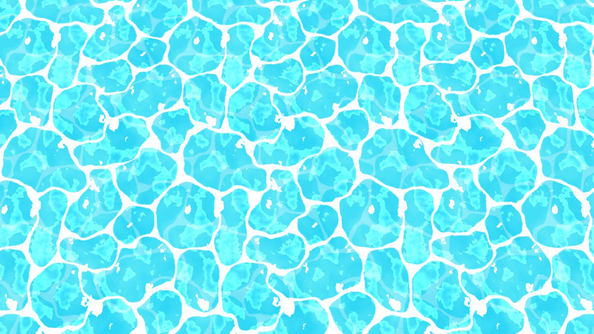
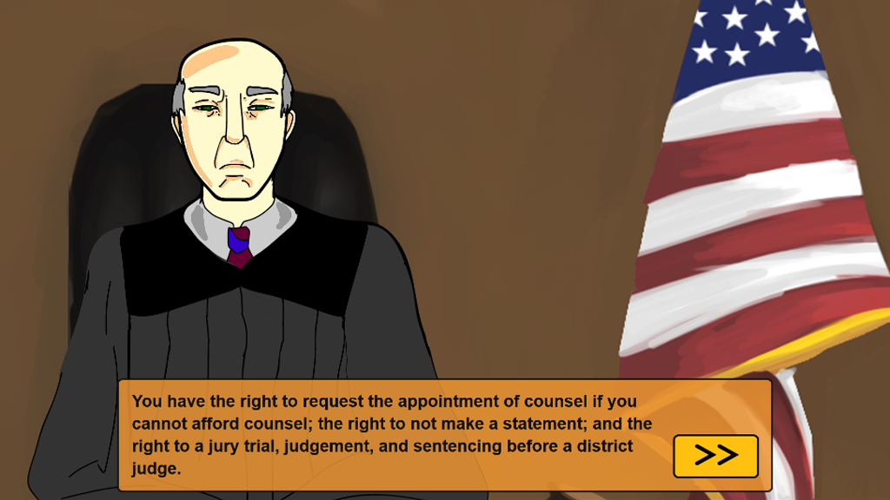
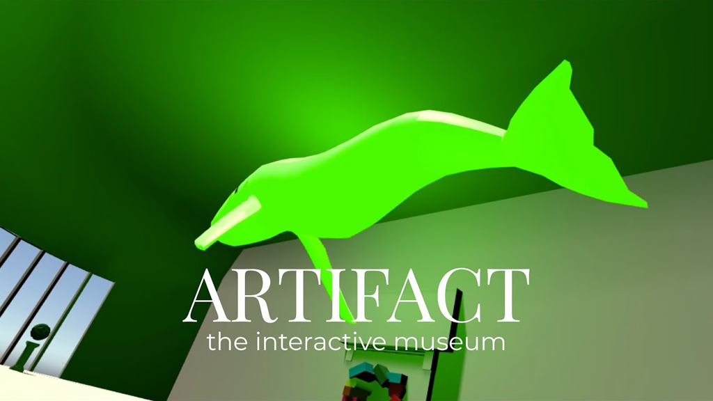
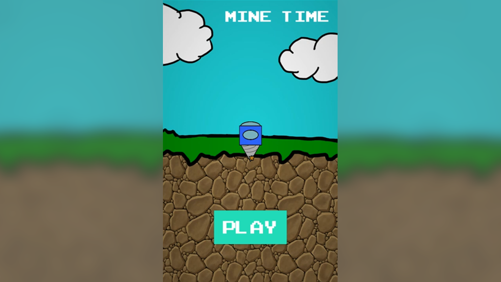
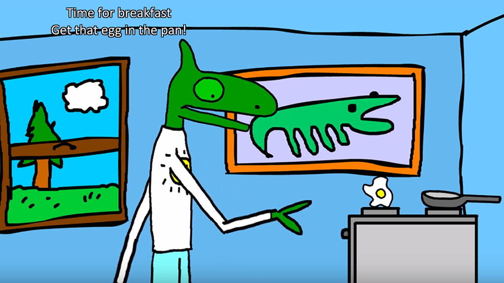
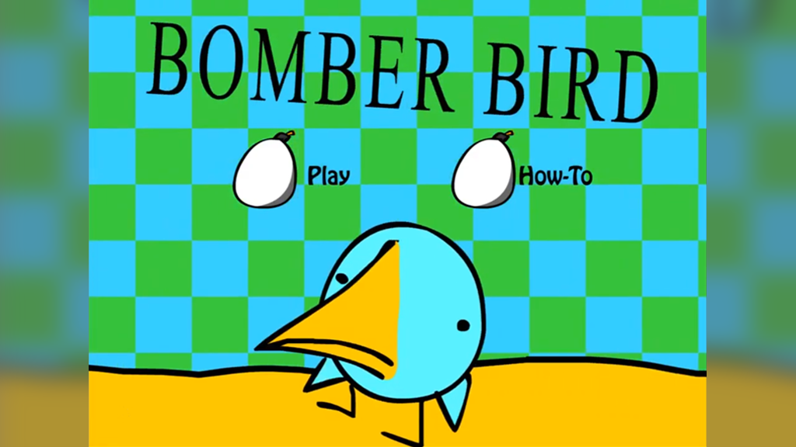
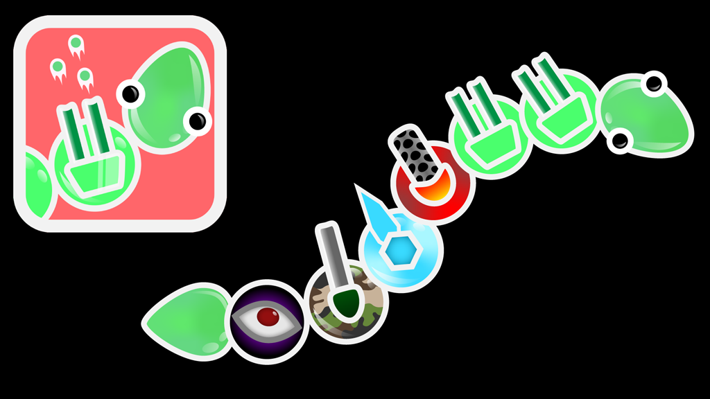
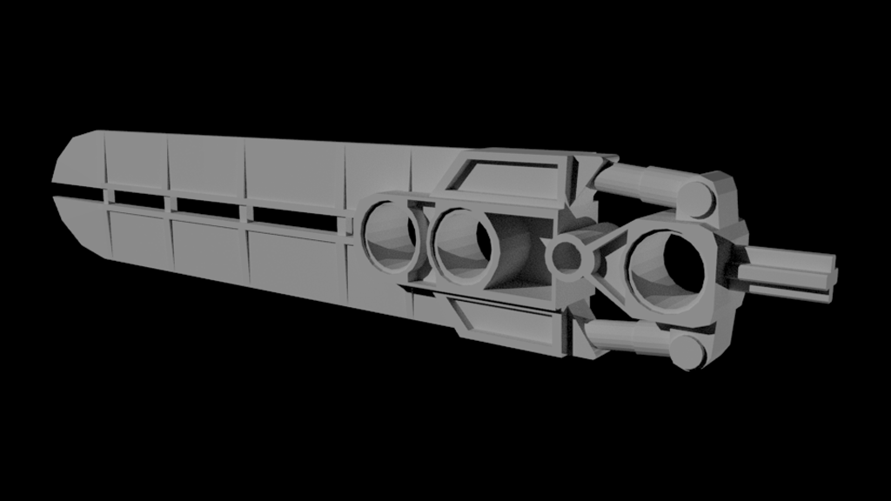
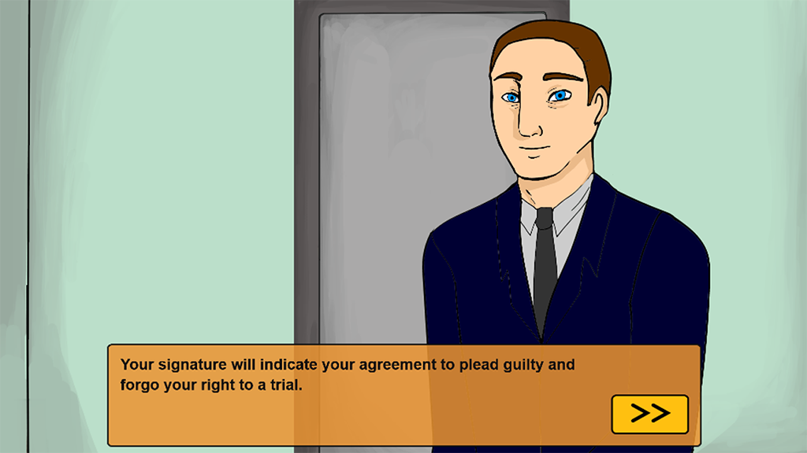
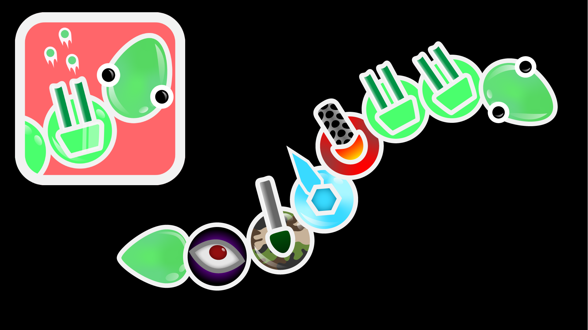

Hi and welcome to my page! I'm 23 and I recently graduated from University of Massachusetts Lowell, where I received a
B.S. in Computer Science and Minors in Graphic Design and Mathematics.
I’ve had a passion for computers since a young age and found an interest in programming while taking computer
science classes offered at my high school. Since then I’ve worked on video games, a virtual reality interactive
experience, a psychology research tool, and a variety of other educational/personal projects. Aside from
programming I love reading, video games, computer hardware (especially advances in AR/VR), and I’m an avid
music listener. Check out some of my work below, or hop over to my About page to read more or connect with me!
My Work
Here are some select examples of the work I've done both in and out of school.

Toon Water Shader
Fall 2020

The Plea Justice Project
Spring 2019 - Fall 2020

Artifact
Spring 2019

Mine Time
Spring 2018

Working Class Chameleon
Spring 2016

BomberBird
Spring 2015

Snake Shooter
Spring 2020

Kopaka's Ice Sword
Spring 2020
OS Icon Series
Fall 2019
Toon Water Shader
This is a project I worked on for Computer Graphics II during my last semester at UML. It was created in
the Unity Game Engine using ShaderLab. I was inspired by the water shaders from GameCube/Wii-era Nintendo games and wanted
to try to recreate a similar effect from scratch.
It employs similar techniques used in those games, which mainly involves heavy use of scrolling textures. The main water texture
scrolls, and a distortion map is scrolled in the opposite direction on top of that to achieve the wavy water effect. The shimmers
on the surface of the water is created by diagonally scrolling two noise textures on top of eachother in opposite directions. Then,
the pixels over a certain brightness are culled, creating the more subtle shimmering effect. Some of the brightest pixels are re-added,
which creates the white highlights on the water.
In the future, I'd like to add more features such as waves using a height-map, foam around the edges of the water, and splashes for any
characters moving through the water. All the art and code is mine except for a water distortion texture, which was from
a tutorial hosted on catlikecoding.com
The Plea Justice Project

This was something I worked on from May 2019 - September 2020. I was in a small team under Professor Miko Wilford and
Professor Misha Rabinovich to develop a tool used to do research on plea deals and plea bargaining. The goal for this project is that any
psychology or criminal justice researchers could utilize it.
Conventional methods for studies on plea bargaining usually just involve a vignette where the participant reads a story off of a paper.
Research shows that having little immersion can make it difficult for participants to answer as if they were actually the ones involved.
A tool like this, with a customizable avatar, can greatly increase immerson for the participant.
I worked the avatar customizer, the simulation, the Qualtrics surveys, did some animation touch ups, and helped with the design of the
simulation customization UI. The simulation itself uses the CanvasJS JavaScript libraries to interface with HTML5 animations exported from
Adobe Animate. I also helped set up studies for other researchers who wanted to use the software while the more user-friendly customization and deployment
tools were still under development.
Read more and demo the software on the Plea Justice Website!
Artifact
This was for a group project in my Interactive Media II class. The class was interesting as it paired
animation and interactive media majors with computer science majors to make something using Augmented or Virtual Reality.
Our group was me as programmer, Gus Sajisevi creating the art and assets, and Samuel Marquis creating the music.
The idea behind our project was that we wanted to create an interactive museum experience in virtual reality. Sound is the
main focus of the museum, and the virtual exhibits in the various rooms of the museum all offer different ways for the user
to control and play with the music they hear.
Check out some uncut footage in the video below! The Red Room is my personal favorite part. Links to my group members' work
is in the video description.
Mine Time
This was a project done in the Unity Engine for my game design class over the course of about a month. I wanted to create a simple and
fun mobile game where you drill downwards as far as you can while mining gold ore and avoiding rocks. On Android, it is controlled by
touching the left and right halves of the screen to steer.
All the art and code is by me except for the ground texture.
Working Class Chameleon
Working Class Chameleon is a very short and silly game made in the Unity Engine about a chameleon going through his day to day activities.
I worked on this with one partner, Filipo Scarfo, for a Game Design class I took in high school. I did the programming, Phil did the art/music, and
we collaborated on game design and level design. A few of the final levels remain unfinished.
BomerBird
BomberBird was a project done using Adobe Flash for a Game Design course I took in high school, and was one of the first games I created
when I was still early into my programming career. I worked on this with Filipo Scarfo, with him doing the art and me programming.
The music is taken from various Sonic the Hedgehog games.
This was our attempt at recreating the popular game, Bomberman, in Flash with a fun spin on the theme. The game features up to 4 players,
randomly placed powerups, and slight randomization to the generation of levels.
Snake Shooter

These are some assets that I created in Adobe Illustrator for a mobile game that my cousin was developing. This game would be somewhere between
a Snake Game and a Tower Defense game, where you would pilot your snake around the map using your various towers to shoot at enemies. You could
spend currency to add new segments to your body, as well as upgrade existing ones.
Kopaka's Ice Sword
This is a Bioncile piece that I modeled in Autodesk Maya for my 3D Modeling class. I own one of these pieces so I used that as
my primary reference, as well as using a few pictures of the sword.
OS Icon Series
This is a series of icons I worked on for my Graphic Design class. I wanted to create a set of simple, minimalist icons that could be found in an
operating system's settings menu. They work on both dark and light backgrounds, and have a customizable accent color.